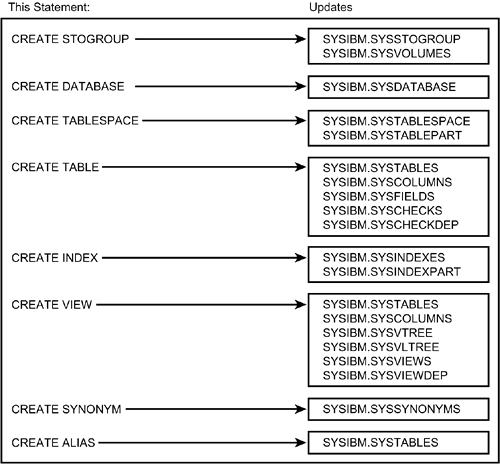
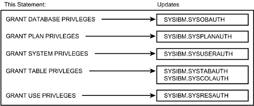
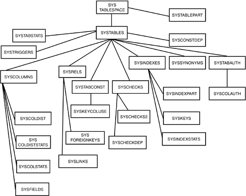
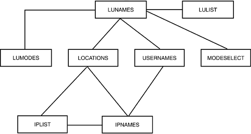
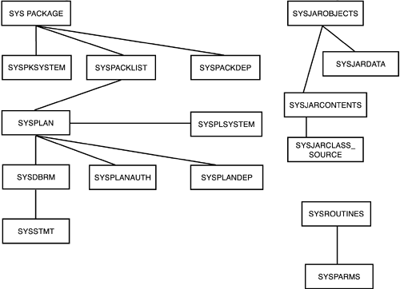
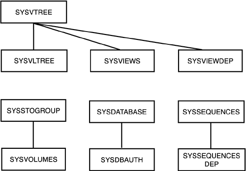

|
|
< Day Day Up > |
|
The DB2 CatalogThe entire DBMS relies on the system catalog, or the DB2 Catalog. If the DB2 optimizer is the heart and soul of DB2, the DB2 Catalog is its brain, or memory. The knowledge base of every object known to DB2 is stored in the DB2 Catalog. What Is the DB2 Catalog?The tables in the DB2 Catalog collectively describe the objects and resources available to DB2. You can think of the DB2 Catalog as a metadata repository for your DB2 databases. The DB2 Catalog is contained in a single database named DSNDB06. Consult Table 22.1 for a short description of each table in the DB2 Catalog. Tables new to DB2 V7 and V8 are indicated with the version number in parentheses following the table name. NOTE Prior to DB2 V5, the catalog tables controlling distributed DB2 were stored in a separate database named DSNDDF, known as the Communication Database (or CDB). The CDB was used to describe the connections of a local DB2 subsystem to other systems. The CDB tables are now part of the DB2 Catalog. The CDB tables that have been renamed and rolled into the DB2 Catalog are as follows:
Each DB2 Catalog table maintains data about an aspect of the DB2 environment. In that respect, the DB2 Catalog functions as a data dictionary for DB2, supporting and maintaining data about the DB2 environment. (A data dictionary maintains metadata, or data about data.) The DB2 Catalog records all the information required by DB2 for the following functional areas:
How does the DB2 Catalog support data about these areas? For the most part, the tables of the DB2 Catalog cannot be modified using standard SQL data manipulation language statements. You do not use INSERT statements, DELETE statements, or UPDATE statements (with a few exceptions) to modify these tables. Instead, the DB2 Catalog operates as a semiactive, integrated, and nonsubvertible data dictionary. The definitions of these three adjectives follow. First, the DB2 Catalog is said to be semiactive. An active dictionary is built, maintained, and used as the result of the creation of the objects defined to the dictionary. In other words, as the user is utilizing the intrinsic functions of the DBMS, metadata is being accumulated and populated in the active data dictionary. The DB2 Catalog, therefore, is active in the sense that when standard DB2 SQL is issued, the DB2 Catalog is either updated or accessed. All the information in the DB2 Catalog, however, is not completely up-to-date, and some of the tables must be proactively populated (such as SYSIBM.IPNAMES and SYSIBM.IPLIST). You can see where the DB2 Catalog operates as an active data dictionary. Remember that the three types of SQL are DDL, DCL, and DML. When DDL is issued to create DB2 objects such as databases, tablespaces, and tables, the pertinent descriptive information is stored in the DB2 Catalog. Figure 22.1 shows the effects of DDL on the DB2 Catalog. When a CREATE, DROP, or ALTER statement is issued, information is recorded or updated in the DB2 Catalog. The same is true for security SQL data control language statements. The GRANT and REVOKE statements cause information to be added or removed from DB2 Catalog tables (see Figure 22.2). Data manipulation language SQL statements use the DB2 Catalog to ensure that the statements accurately reference the DB2 objects being manipulated (such as column names and data types). Figure 22.1. The effect of DDL on the DB2 Catalog. Figure 22.2. The effect of DCL on the DB2 Catalog. Why then is the DB2 Catalog classified as only semiactive rather than completely active? The DB2 Catalog houses important information about the physical organization of DB2 objects. For example, the following information is maintained in the DB2 Catalog:
This information is populated by means of the DB2 RUNSTATS utility. A truly active data dictionary would update this information as data is populated in the application table spaces, tables, and indexes. But this was deemed to be too costly. Therefore, the DB2 Catalog is only semiactive. NOTE
The DB2 Catalog is also described as being integrated. The DB2 Catalog and the DB2 DBMS are inherently bound together, neither having purpose or function without the other. The DB2 Catalog without DB2 defines nothing; DB2 without the DB2 Catalog has nothing defined that it can operate on. The final adjective used to classify the DB2 Catalog is nonsubvertible. This simply means that the DB2 Catalog is continually updated as DB2 is being used; the most important metadata in the DB2 Catalog cannot be updated behind DB2's back. Suppose that you created a table with 20 columns. You cannot subsequently update the DB2 Catalog to indicate that the table has 15 columns instead of 20 without using standard DB2 data definition language SQL statements to drop and re-create the table. An Exception to the RuleAs with most things in life, there are exceptions to the basic rule that the SQL data manipulation language cannot be used to modify DB2 Catalog tables. You can modify columns (used by the DB2 optimizer) that pertain to the physical organization of table data. This topic is covered in depth in Chapter 28. The Benefits of an Active CatalogThe presence of an active catalog is a boon to the DB2 developer. The DB2 Catalog is synchronized to each application database. You can be assured, therefore, that the metadata retrieved from the DB2 Catalog is 100% accurate. Because the DB2 Catalog is composed of DB2 tables (albeit modified for performance), you can query these tables using standard SQL. The hassle of documenting physical database structures is handled by the active DB2 Catalog and the power of SQL. DB2 Catalog StructureThe DB2 Catalog is structured as DB2 tables, but they are not always standard DB2 tables. Many of the DB2 Catalog tables are tied together hierarchically—not unlike an IMS database—using a special type of relationship called a link. You can determine the nature of these links by querying the SYSIBM.SYSLINKS DB2 Catalog table. This DB2 Catalog table stores the pertinent information defining the relationships between other DB2 Catalog tables. To view this information, issue the following SQL statement:
SELECT PARENTNAME, TBNAME, LINKNAME,
CHILDSEQ, COLCOUNT, INSERTRULE
FROM SYSIBM.SYSLINKS
ORDER BY PARENTNAME, CHILDSEQ;
The following data is returned:
CHILD COL INSERT
PARENTNAME TBNAME LINKNAME SEQ COUNT RULE
SYSCOLUMNS SYSFIELDS DSNDF#FD 1 0 O
SYSDATABASE SYSDBAUTH DSNDD#AD 1 0 F
SYSDBRM SYSSTMT DSNPD#PS 1 0 L
SYSINDEXES SYSINDEXPART DSNDC#DR 1 1 U
SYSINDEXES SYSKEYS DSNDX#DK 2 1 U
SYSPLAN SYSDBRM DSNPP#PD 1 1 U
SYSPLAN SYSPLANAUTH DSNPP#AP 2 0 F
SYSPLAN SYSPLANDEP DSNPP#PU 3 0 F
SYSRELS SYSLINKS DSNDR#DL 1 0 O
SYSRELS SYSFOREIGNKEYS DSNDR#DF 2 1 U
SYSSTOGROUP SYSVOLUMES DSNSS#SV 1 0 L
SYSTABAUTH SYSCOLAUTH DSNAT#AF 1 0 F
SYSTABLES SYSCOLUMNS DSNDT#DF 1 1 U
SYSTABLES SYSRELS DSNDT#DR 2 1 U
SYSTABLES SYSINDEXES DSNDT#DX 3 0 F
SYSTABLES SYSTABAUTH DSNDT#AT 4 0 F
SYSTABLES SYSSYNONYMS DSNDT#DY 5 0 F
SYSTABLESPACE SYSTABLEPART DSNDS#DP 1 1 U
SYSTABLESPACE SYSTABLES DSNDS#DT 2 0 F
SYSVTREE SYSVLTREE DSNVT#VL 1 0 L
SYSVTREE SYSVIEWS DSNVT#VW 2 1 U
SYSVTREE SYSVIEWDEP DSNVT#VU 3 0 F
This information can be used to construct the physical composition of the DB2 Catalog links. To accomplish this, keep the following rules in mind:
The newer DB2 Catalog tables do not use links; they use proper referential constraints. Hierarchical diagrams of the DB2 Catalog depicting relationships between the tables are shown in Figures 22.3 through 22.6. These diagrams show the major relationships and do not show every DB2 Catalog table in order to remain legible and useful. Figure 22.3. The DB2 Catalog: tablespaces, tables, and indexes.Figure 22.6. The DB2 Catalog: distributed information and the CDB. As you query the DB2 Catalog, remember that DB2 indexes are used only by SQL queries against the DB2 Catalog, never by internal DB2 operations. For example, when the BIND command queries the DB2 Catalog for syntax checking and access path selection, only the internal DB2 Catalog links are used. Figure 22.4. The DB2 Catalog: programs, plans, packages, and routines. Figure 22.5. The DB2 Catalog: views, storage groups, sequences, and databases. |
|
|
< Day Day Up > |
|